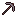
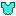
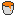

Low-fidelity rebuilds of the current interface, drawn at the default window size
(1180 by 760 px) with the real design tokens and Minecraft textures. Each
numbered pin matches a note on the right that explains what the element is,
why it is there and how it behaves. Use the theme button at the top to see
every screen in light and dark.
All screens except Setup share one shell. Learn it once and every
mock below reads the same way.
Sidebar, 232 px
Brand, the contextual primary button (New Instance, New Server, New skin), the four sections, then Collapse sidebar, Activity and the profile. A grass strip closes it.
Back row
Only on pages that have a parent. Reads "Back to" plus the name of the page you came from, and restores its tab, filters and scroll.
Main area
A heading with a pixel item, then the content. Lists scroll inside the area; headings, tabs and side panels stay put.
Canvas
Deep night blue with two soft accent glows and faint Minecraft items scattered behind the content, never behind a label.
1. Setup (first run)
screen: loginFR-01.1 to FR-01.4
1
Udeos Launcher
Minecraft, your way.
2
3
CraftyFox
3 to 16 letters, numbers or underscores. Other players see it in game.
4Next
2. Instances (dashboard)
screen: dashboardFR-02.1 to FR-02.3
1Your Instances 4
2
3
New World1.21.1Vanilla
Never played4Play
Modded Fun1.20.1Forge
12 mods · 1 worldPlay
Fabric Fun1.20.1Fabric
Never playedPlay
5
New Instance
3. Waiting states: launch strip, Playing and Activity
6Add Sodium to…Only instances it runs on are listed.
Fabric Fun1.20.1
Quilt Test1.21.1
7. Addon details
screen: detailFR-05.10, FR-05.11
Back to Addons
1Your instances
Fabric FunAdd
Quilt TestAdded
2Minecraft versions
1.21.11.211.20.61.20.41.20.1+14 more
Loaders
FabricQuilt
Sodium
by CaffeineMC · ↓ 42M · LGPL-3.0
3AboutVersionsGallery
OptimizationClientSourceIssues
4A modern rendering engine
8. Ask AI (with an answer)
screen: search (ai)FR-06.1 to FR-06.9
Back to Modded Fun
Ask AI
1For Modded Fun · 1.20.1 Forge2Groq (built-in)
My game lags on a weak PC
3Understood: better frame rate on low-end hardware, Forge 1.20.1.Renderer
Embeddium
A Sodium port for Forge: rewrites chunk rendering, the biggest win on weak GPUs.
Add
Game logic
FerriteCore
Cuts memory use, so the game stutters less on 4 GB machines.
Add
4Add shaders tooMake it lighterSee all in Addons
5
e.g. my game lags on a weak PC
Ask
9. Servers
screen: serversFR-07.1 to FR-07.3
Your Servers 3
Host a world on this computer for your friends to join.
1
Friends SMP
1.21.1Vanilla
Ready · 3/20 players
Stop
2

Create World
1.20.1Forge
Starting… installing Forge
Starting…
3
Skyblock
1.21.1Fabric
Stopped
Start
10. Server page (Console tab)
screen: serverFR-07.4 to FR-07.12
Back to Servers
1Friends SMP
1.21.1Vanilla
Ready
Players
3/20
Run time
1 h
Stop
EditFolder
2
Internet address
udeoslauncher.friends-smp.159-223….nip.io:41234
Copy
3ConsolePlayersInternetBackupsDatapacksSettings
4
[12:01:04] Starting minecraft server version 1.21.1 [12:01:06] Preparing level "world" [12:01:09] Done (3.2s)! For help, type "help" [12:03:15] Alex joined the game [12:04:02] <Alex> hi! [12:05:40] CraftyFox joined the game [12:06:11] Steve joined the game
5Type a command, no / needed
11. Skins
screen: skinsFR-08.1 to FR-08.4

Skins
Choose how you look in all your instances.
1
WearingDrag to turn
SteveDefaultClassic
2
Drop a skin you downloaded
Any .png from a skin website
Browse files
Library 3
3
In use
SteveClassic · Default
ExplorerClassic
4
AuroraSlim
12. Skin editor
screen: skinEditorFR-08.5, FR-08.6
Back to Skins
1EGI
2
Right-drag to turn · wheel to zoom · 0 resets
3Colour
4Second layer
HeadBodyArmsLegs
ClassicSlim
Save skin
13. Collapsed rail and empty state
shell: railFR-09.2, FR-02.3
2No instances yetAn instance is one copy of the game with its own worlds and mods. Create one to start playing.Create your first instance
1
14. Dialogs
Dialogs are native <dialog> elements on the glass surface: focus is trapped, Escape closes, nothing fades in. Destructive actions take the danger style and never sit where Play was.

Delete "Modded Fun"?
Its worlds, mods and screenshots are removed from this computer. This cannot be undone.
CancelDelete
Confirm delete: worlds, instances, servers, backups and skins.
Udeos 3.4.0 is ready
A new version is out. Update now, or keep playing and update later.
LaterUpdate
Update prompt: once per start, never blocking.
Servers are still running
Friends SMP · 3 players
They are stopped and their worlds saved before the launcher closes.
CancelStop and close
Safe close: FR-09.7.
Incompatible mod
OptiFine conflicts with Sodium, which is already in Fabric Fun. Nothing was installed.
CloseSee options
Error headline of one to three words, the reason underneath.